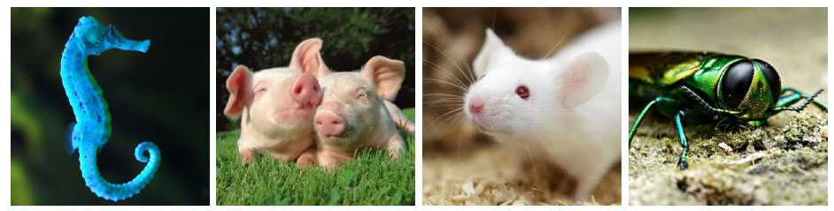
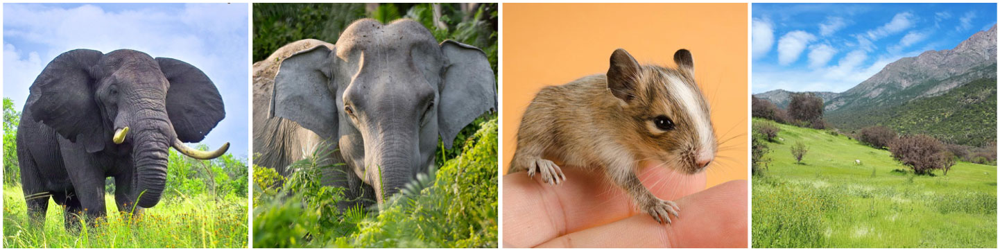
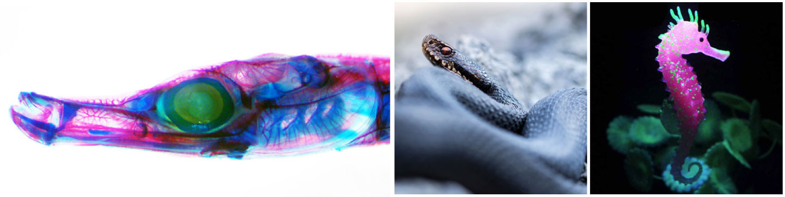

Parvovirus-GLUE: Highlights
These highlights pages aim to provide a brief overview of selected data items contained within the Parvovirus-GLUE project, and to illustrate how it can be used to implement reproducible comparative analyses.
Viruses: Hamaparvoviruses
Occasionally, our investigations of WGS databases turn up sequences that do not derive from endogenous parvoviral elements (EPVs), but instead from infectious viruses that have contaminated genomic DNA samples.
In 2017 we reported sequences derived from viruses belonging to genus Chaphamaparvovirus in WGS data of vertebrate species. Detection and analysis of these sequences indicated that the host range of 'chappaparvoviruses' (as the group was then known) encompassed a diverse range of vertebrate species.
Chaphamaparvoviruses are representatives of a newly described parvovirus subfamily: ''Hamaparvovirinae'. Although relatively little is known about these viruses (most have only been described at sequence-level) it is becoming clear that they are very widely distributed, and that some are associated with disease. For example, porcine parvovirus 7 (PPV) is one of the organisms associated with Stillbirths Mummification Embryonic Death and Infertility (SMEDI) syndrome, while mouse kidney parvovirus is associated with “inclusion body nephritis/nephropathy” - a disease of immunocompromised laboratory mice.

Some of the species in which hamaparvoviruses and/or hamaparvovirus-derived EPVs have been identified. Left to right: 'Icthamaparvovirus'-derived EPVs were identified in the tiger-tail seahorse; Porcine parvovirus 7 (PPV7) is an emerging virus of domestic pigs; Mouse kidney parvovirus is associated with nephrotic disease in immunosuppressed laboratory mice; We have identified EFVs derived from unclassified hamaparvovirus-like viruses in a wide range of invertebrate species.
We subsequently performed broader screening in animal genomes and
Related data items:
EPVs: Dependo.54.Cavia (enRep)
enREP is one of several dependoparvovirus-derived sequences we identified in the Cavia germline. Since many of these elements span different genomic regions, it is likely that they derive from a smaller number of initial integrants, including at least one genome-length or near genome-length sequence, which latterly became fragmented (e.g. by transposable element insertions, chromosome re-arrangements). We identified two groups of elements that spanned the rep gene. The first includes enRep sequences from both guinea pig species examined. The second includes a longer element that spans an entire rep gene. This second group of elements is much older, being shared across rodents species that diverged >70 million years ago.

left to right: Guinea pig, Skeletal muscle fibres, parvovirus virion.
While most of this EPV sequence is degraded, the portions included in the enRep-Myo9 gene are intact in multiple species of guinea pig (genus Cavia), consistent with evolution under purifying selection.
The broad expression of enRep-Myo9 mRNA, the conservation of it’s EPV-derived regions in multiple species of guinea pig (genus Cavia), indicate that this host-virus fusion gene encodes a protein with a physiologically relevant role.
The viral portions of enRep-Myo9 derive from an ancient dependoparvovirus (genus Dependoparvovirus) that was incorporated into the genome of caviomorph rodents >6 million years ago.
Related data items:
EPVs: Dependo.6-Elephas and Dependo.43-Octodon
Amongst the various EPV that have been reported so far, several have been found to encode replicase genes with intact open reading frames. In a previous study, we investigated one of these genes - found in the genome of the degu - a South American rodent. Intriguingly, we found that it showed a clear, tissue-specific pattern of activity
Furthermore, intact replicase genes in independently acquired dependoparvovirus-derived EPV in rodents and afrotherians have been shown to exhibit similar patterns of tissue-specific expression.

left to right: African elephant, Asian elephant, degu, Chilean mattoral habitat.
Tissue-specific transcription of a completely intact, replicase-encoding EPV, present in the genome of the degu (Octodon degus)
Related data items:
EPVs: Ichthama.1.Hippocampus and Ichthama.2.Serpentes
The newly defined subfamily Hamaparvovirinae contains two genera known to infect vertebrates. Genus Chaphamaparvovirus contains mouse kidney parvovirus, a pathogen of laboratory mice, and viruses identified via sequencing of diverse vertebrate species {Genus Ichthamaparvovirus contains a single species, Syngnathus scovelli chapparvovirus, identified in the gulf pipefish.
Ichthamaparvovirus is a recently discovered genus subfamily Hamaparvovirinae. EPVs derived from this genus are rare, but have been detected in (i) the tiger-tail seahorse, and (ii) various species of sea snake.
This sequence showed a close relationship to ScChPV - the prototype member of the Ichthamaparvovirus genus.

left to right: Pipefish, adder (Vipera berus), sea horse.
Related data items:
EPVs: Amdo.1.Ellobius
Amdo.1.Ellobius is an amdoparvovirus-derived EPV, identified in the genome of the Transcaucasian mole vole (E. lutescens) - a species of cricetid rodent inhabiting semi-arid or grassland areas in Central Asia, and notable for its unusual karyotype: only a single sex chromosome is present - with the Y chromosome having been eliminated - and all individuals possess a diploid number of 17 chromosomes. This interesting characteristic has motivated the sequencing of the E.lutescens genome, as well as that of a sister species - the northern mole vole (E. talpinus).
We identified the corresponding empty genomic integration sites in E. talpinus - indicating that both elements were incorporated into the E.lutescens germline within the last 10 million years. Intriguingly, in silico pedictions indicated that this replicase could be expressed as a fusion protein with a partial MAFG gene product.

Transcaucasus region - habitat of the Transcaucasian mole vole (E. lutescens).
We identified four further EPV in mammal and reptile genomes that are intermediate between amdoparvoviruses and their sister genus (Protoparvovirus) in terms of their phylogenetic placement and genomic features. In particular, we identify a genome-length EPV in the genome of a pit viper (Protobothrops mucrosquamatus) that is more like a protoparvovirus than an amdoparvovirus in terms of its phylogenetic placement and the structural features of its capsid protein (as revealed by homology modeling), yet exhibits characteristically amdoparvovirus-like genome features including: (i) a putative middle ORF gene; (ii) a capsid gene that lacks a phospholipase A2 (PLA2) domain; (iii) a genome structure consistent with an amdoparvovirus-like mechanism of capsid gene expression. The AP-derived sequences in the pit vipers also encode a replicase gene that appears to have the potential to express intact protein.
Related data items:
Related Publications
Hildebrandt E, Penzes J, Gifford RJ, Agbandje-Mckenna M, and R Kotin
(2020)
Evolution of dependoparvoviruses across geological timescales – implications for design of AAV-based gene therapy vectors.
Virus Evolution
[view]
Pénzes JJ, de Souza WM, Agbandje-Mckenna M, and RJ Gifford
(2019)
An ancient lineage of highly divergent parvoviruses infects both vertebrate and invertebrate hosts.
Viruses
[view]
Callaway HM, Subramanian S, Urbina C, Barnard K, Dick R, Hafentein SL, Gifford RJ, and CR Parrish
(2019)
Examination and reconstruction of three ancient endogenous parvovirus capsid proteins in rodent genomes.
Journal of Virology
[view]
Kobayashi Y, Shimazu T, Murata K, Itou T, Suzuki Y.
(2019)
An endogenous adeno-associated virus element in elephants.
Virus Res. Mar;262:10-14
[view]
Valencia-Herrera I, Cena-Ahumada E, Faunes F, Ibarra-Karmy R, Gifford RJ*, and G Arriagada*
(2019)
*co-corresponding authors
Molecular properties and evolutionary origins of a parvovirus-derived myosin fusion gene in guinea pigs.
Journal of Virology [view]
Roediger B, Lee Q, Tikoo S, Cobbin JCA, Henderson JM, Jormakka M, O'Rourke MB, Padula MP, Pinello N,
Henry M, Wynne M, Santagostino SF, Brayton CF, Rasmussen L, Lisowski L, Tay SS, Harris DC, Bertram JF,
Dowling JP, Bertolino P, Lai JH, Wu W, Bachovchin WW, Wong JJ, Gorrell MD, Shaban B, Holmes EC, Jolly CJ,
Monette S, Weninger W.
(2018)
An Atypical Parvovirus Drives Chronic Tubulointerstitial Nephropathy and Kidney Fibrosis.
Cell. [view]
Souza WM, Romeiro MF, Fumagalli MJ, Modha S, de Araujo J, Queiroz LH, Durigon EL, Figueiredo LT, Murcia PR, Gifford RJ.
(2017)
Chapparvoviruses occur in at least three vertebrate classes and have a broad biogeographic distribution.
J Gen Virol.
[view]
Pénzes JJ, Marsile-Medun S, Agbandje-McKenna M, and RJ Gifford
(2018)
Endogenous amdoparvovirus-related elements reveal insights into the biology and evolution of vertebrate parvoviruses.
Virus Evolution
[view]
Gloria Arriagada and RJ Gifford
(2014)
Parvovirus-derived endogenous viral elements in two South American rodent genomes.
J. Virol.
[view]